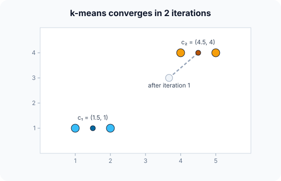

Prerequisites
- Unsupervised learning.
- Euclidean distance and averages of points.
- KNN, for comparison (they are often confused).
The analogy
Everyday analogy
Imagine placing $k$ ice-cream stands on a beach. Each sunbather walks to the nearest stand; then each stand moves to the middle of its customers; people re-choose the nearest stand; and so on until nobody switches.
k-means is exactly that dance. The stands are the centroids, and each round lowers the total walking distance.
How it works
Inputs: numeric, scaled features and the number of clusters $k$, chosen in advance. Here $k = 2$, with initial centroids $c_1 = (1, 1)$ and $c_2 = (2, 1)$.
Start with one iteration by hand
Points (1, 1), (2, 1), (4, 4), (5, 4). Centroids $c_1 = (1, 1)$, $c_2 = (2, 1)$. Predict, then open "Check".
Example: predict before you read
Step 1. Assignment: which centroid is nearest to each point?
Check
(1, 1) → $c_1$. (2, 1) → $c_2$ (distance 0). (4, 4) and (5, 4) → $c_2$, which is closer than $c_1$.
Step 2. Cover the next line and guess: update each centroid to the mean of its points.
Check
$c_1 = (1, 1)$ (only one point). $c_2 = ((2 + 4 + 5)/3, (1 + 4 + 4)/3) \approx (3.67, 3)$.
Step 3. Iteration 2: reassign (2, 1). Predict its new cluster and the new centroids.
Check
(2, 1) is now 1 from $c_1$ and about 2.6 from $c_2$, so it moves to $c_1$. New centroids: $c_1 = (1.5, 1)$, $c_2 = (4.5, 4)$. A third round changes nothing: converged.

Quick recall: Before reading further, cover the text above and say out loud: what are the two steps of each k-means iteration?
Check your answer
Assign every point to its nearest centroid; then move each centroid to the mean of its assigned points.
Finish the picture: choosing k and the start
Two things k-means doesn't decide for you.
- $k = 1, 2, 3, 4$ on these points. Predict how the within-cluster sum of squares (WCSS) behaves.
Check
It always falls as $k$ grows (to 0 at $k = 4$). The "elbow", where it stops falling fast, is at $k = 2$ here: WCSS drops from 19 to 1, then only to 0.5.
- A bad start. Predict the risk of starting both centroids inside one group.
Check
k-means can get stuck in a poor local optimum. Use k-means++ seeding and several restarts, keeping the lowest WCSS.
Quick recall: Without scrolling up, say out loud: what is the final within-cluster sum of squares here?
Check your answer
Each point is 0.5 from its centroid, so $4 \times 0.25 = 1.0$.
Full worked calculation
k-means with $k = 2$ on the points (1, 1), (2, 1), (4, 4), (5, 4), starting from a bad choice of centroids, $c_1 = (1, 1)$ and $c_2 = (2, 1)$. Every distance is squared Euclidean, as k-means uses.
| Point | Iter 1: to $c_1$ | Iter 1: to $c_2$ | Cluster | Iter 2: to $c_1$ | Iter 2: to $c_2$ | Cluster |
|---|---|---|---|---|---|---|
| (1, 1) | 0 | 1 | 1 | 0 | 11.11 | 1 |
| (2, 1) | 1 | 0 | 2 | 1 | 6.78 | 1 |
| (4, 4) | 18 | 13 | 2 | 18 | 1.11 | 2 |
| (5, 4) | 25 | 18 | 2 | 25 | 2.78 | 2 |
-
1Iteration 1: assign
$$d^2\big((4, 4), c_1\big) = 3^2 + 3^2 = 18, \qquad d^2\big((4, 4), c_2\big) = 2^2 + 3^2 = 13 \;\Rightarrow\; c_2$$Each point joins its nearest centroid. Because $c_2 = (2, 1)$ is slightly closer to the far group, it grabs (2, 1), (4, 4) and (5, 4), while $c_1$ keeps only (1, 1).
-
2Iteration 1: update
$$c_1 = (1, 1), \qquad c_2 = \left(\frac{2 + 4 + 5}{3}, \frac{1 + 4 + 4}{3}\right) = (3.667, 3)$$Each centroid moves to the mean of its points. $c_2$ is dragged up towards the big group, leaving (2, 1) far behind.
-
3WCSS after iteration 1
$$\text{WCSS} = 0 + \big(1.667^2 + 2^2\big) + \big(0.333^2 + 1^2\big) + \big(1.333^2 + 1^2\big) = 6.78 + 1.11 + 2.78 = 10.67$$The within-cluster sum of squares adds every point's squared distance to its own centroid. It is the number k-means is trying to minimise.
-
4Iteration 2: reassign
$$d^2\big((2, 1), c_1\big) = 1 \;<\; d^2\big((2, 1), c_2\big) = 1.667^2 + 2^2 = 6.78 \;\Rightarrow\; (2, 1) \text{ switches to } c_1$$Now that $c_2$ has moved away, (2, 1) is much closer to $c_1$. This is the step that repairs the bad start.
-
5Iteration 2: update
$$c_1 = \left(\frac{1 + 2}{2}, 1\right) = (1.5, 1), \qquad c_2 = \left(\frac{4 + 5}{2}, 4\right) = (4.5, 4)$$Both centroids now sit in the middle of a natural group.
-
6WCSS after iteration 2
$$\text{WCSS} = 0.5^2 + 0.5^2 + 0.5^2 + 0.5^2 = 1$$Every point is 0.5 from its centroid. The error dropped from 10.67 to 1: each iteration can only lower (or keep) the WCSS.
-
7Iteration 3: convergence
$$\text{assignments } [1, 1, 2, 2] \text{ unchanged} \;\Rightarrow\; \text{stop}$$Recomputing the distances gives the same clusters, so the centroids would not move. k-means stops when nothing changes.
What the numbers tell us
Two iterations of "assign to nearest, move to the mean" turned a bad start into the natural clustering, with WCSS 10.67 → 1.
A different start could have converged to a worse result, which is why k-means++ initialisation and several restarts are used in practice.
The rule in plain words
Pick $k$ starting centroids. Repeat until assignments stop changing: assign each point to its nearest centroid, then update each centroid to the mean of its points.
Run several times with different starts (k-means++) and choose $k$ with the elbow method or silhouette score.
Quick recall: Before you read the code, describe one k-means step in your own words. Then check below.
Check your answer
For each point, find the centroid with the smallest squared distance and record its index. Then, for each centroid, average the coordinates of the points assigned to it.
The code
Read this code after you have done the iteration by hand. It will make more sense.
void kmeans_step(double x[], double y[], int n, double cx[], double cy[], int k, int assign[]) {
for (int i = 0; i < n; i++) { /* assignment step */
int best = 0;
for (int c = 1; c < k; c++)
if ((x[i]-cx[c])*(x[i]-cx[c]) + (y[i]-cy[c])*(y[i]-cy[c]) <
(x[i]-cx[best])*(x[i]-cx[best]) + (y[i]-cy[best])*(y[i]-cy[best])) best = c;
assign[i] = best;
}
for (int c = 0; c < k; c++) { /* update step */
double sx = 0, sy = 0; int cnt = 0;
for (int i = 0; i < n; i++) if (assign[i] == c) { sx += x[i]; sy += y[i]; cnt++; }
if (cnt) { cx[c] = sx / cnt; cy[c] = sy / cnt; } /* mean of its points */
}
}Definition
What you just did, in one line: k-means partitions data into $k$ clusters by alternating between assigning each point to its nearest centroid and moving each centroid to the mean of its points, minimising the within-cluster sum of squares.
flowchart TD
A["choose k starting centroids"] --> B["assign each point to the nearest centroid"]
B --> C["move each centroid to the mean of its points"]
C --> D{"did any assignment change?"}
D -->|yes| B
D -->|no| E["done: clusters are stable"]
How costly is it?
Quick recall: Before looking at the formula, predict: can an iteration ever increase the total within-cluster distance?
Check your answer
No. Both steps can only keep it the same or lower it, which is why k-means always converges.
k-means minimises the within-cluster sum of squares (WCSS, or inertia):
$$\text{WCSS} = \sum_{j=1}^{k} \sum_{x \in C_j} \lVert x - \mu_j \rVert^2 \qquad (= 4 \times 0.5^2 = 1.0 \text{ at the end})$$| Phase | Cost | Why |
|---|---|---|
| One iteration | $O(nkd)$ | Every point against every centroid |
| Whole run | $O(nkd \cdot \text{iterations})$ | Usually few iterations |
| Assigning a new point | $O(kd)$ | Nearest of $k$ centroids |
Best for: large datasets with roughly round, similar-sized clusters, when you know (or can guess) $k$.
- Pro: Simple, fast and scales to millions of points.
- Pro: Easy to interpret: each cluster is summarised by its centroid.
- Con: You must choose $k$, and results depend on the starting centroids.
- Con: Assumes round, similar-sized clusters; sensitive to outliers and feature scale.
Warning
k-means assumes clusters are round blobs. On crescent shapes, rings or clusters of very different sizes it splits them wrongly; use DBSCAN or a Gaussian mixture instead.
Exam tip
Exams give points and starting centroids and ask for one or two iterations. Write a table of distances per point, mark the nearest centroid, then average each group.
Common mistakes
- Confusing k-means (unsupervised clustering) with KNN (supervised classification).
- Running it once and trusting the result, despite its sensitivity to the start.
- Forgetting to scale features, so one large-valued feature decides the clusters.
Try it yourself
Exercise 1 (warm-up)
Points 1, 2, 9, 10 on a line, $k = 2$, start centroids 1 and 2. Do one full iteration.
Hint
Assign 9 and 10 first.
Answer
Assign: 1 → c₁; 2, 9, 10 → c₂. Update: c₁ = 1, c₂ = 7. The next iteration moves 2 to c₁, giving c₁ = 1.5, c₂ = 9.5.
Exercise 2 (a bit harder)
For the four points of the example, compute the WCSS for $k = 1$ (one centroid at the overall mean). Write your answer down before you open it.
Show answer
Mean = (3, 2.5). Squared distances: (1, 1): 4 + 2.25 = 6.25; (2, 1): 1 + 2.25 = 3.25; (4, 4): 1 + 2.25 = 3.25; (5, 4): 4 + 2.25 = 6.25. WCSS = 19. With $k = 2$ it's 1, a huge drop: the elbow is at 2.
Did you know?
Did you know?
Stuart Lloyd devised the algorithm at Bell Labs in 1957 for quantising signals; it was only published in 1982, so it's often called Lloyd's algorithm.
Colour quantisation in image formats like GIF uses k-means: cluster the image's colours into, say, 256 groups and replace each pixel by its centroid colour.
Key points to remember
If you remember one thing from each line, remember the because.
- Each iteration lowers WCSS because both the assignment and the update step can only reduce it.
- It converges because WCSS cannot decrease forever with finitely many assignments.
- Results depend on the start because it only reaches a local optimum.
- It prefers round clusters because it assigns by straight-line distance to a single centre.
- Scaling matters because distances are dominated by the largest-valued feature.
Self-check questions
Answer these in order, out loud. They follow the page, so your answers become the script of your video.
- How is k-means like placing ice-cream stands on a beach?
Sample answer
People walk to the nearest stand, stands move to the middle of their customers, and this repeats until nobody switches.
- Do k-means on (1, 1), (2, 1), (4, 4), (5, 4) starting from centroids (1, 1) and (2, 1).
Sample answer
Iteration 1: c₂ takes (2, 1), (4, 4), (5, 4), moving to (3.67, 3). Iteration 2: (2, 1) moves to c₁, giving (1.5, 1) and (4.5, 4). Then it is stable.
- Why does the update step check
if (cnt)before dividing?A good answer mentions empty clusters.
Sample answer
A centroid might end up with no points; dividing by zero would break it, so it keeps its old position (or is re-initialised).
- So what is k-means, in one sentence?
Sample answer
A clustering method that alternates assigning points to the nearest centroid and moving centroids to the mean of their points.
- Why is k-means guaranteed to stop?
A good answer mentions WCSS.
Sample answer
Neither step can increase the within-cluster sum of squares, and there are only finitely many ways to assign points, so it must reach a state where nothing changes.
- What does one iteration cost?
Sample answer
$O(nkd)$: every point is compared with every centroid in $d$ dimensions.
- Give two pros and two cons.
Sample answer
Pros: fast, simple and interpretable. Cons: needs $k$ and a good start; assumes round, similar-sized clusters.
- If you had to teach this to a friend in 2 minutes, what would you leave out, and why?
Sample answer
I'd leave out k-means++ and silhouette scores. I'd keep the ice-cream analogy, the four-point example, and "assign to nearest, move to mean, repeat; choose $k$ with the elbow".
External resources
- scikit-learn: K-means: the algorithm, k-means++ and mini-batch variants.
- Naftali Harris: Visualizing k-means: an interactive step-by-step demo.
- Wikipedia: k-means clustering: history, variants and limitations.
Videos
- YouTube search: StatQuest k-means: StatQuest's visual walkthrough.